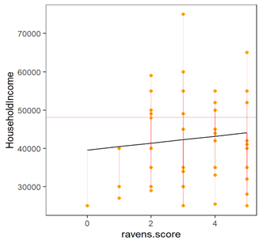
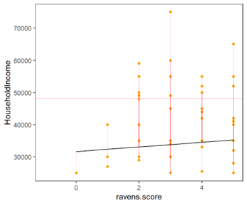
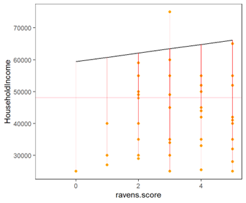
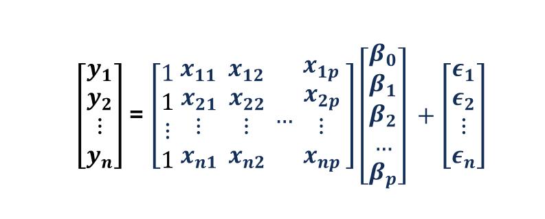
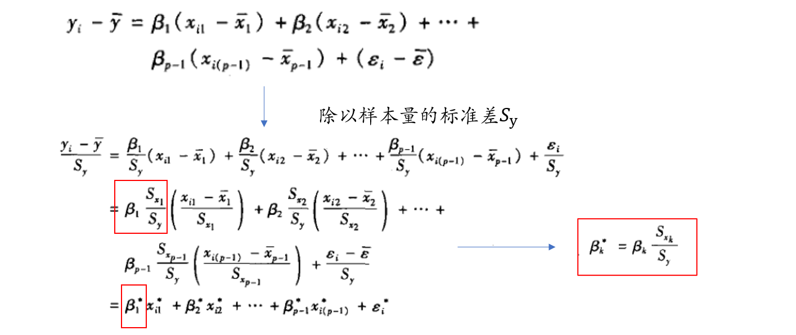
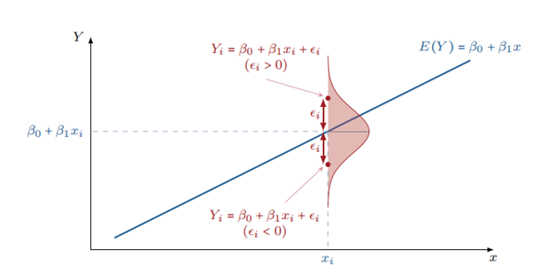

7 多元线性回归
Hu Chuan-Peng
2023-10-24
本次课内容
课前复习
多元线性回归
变量选择
多元回归中系数的解读
基本假定和workflow
课前复习
回归表达形式
\[Y_{n×1}=X_{n×2}\beta_{2×1}+\epsilon_{n×1}\]
\[Y=X\beta+\epsilon\]
\[Y_{n×1}=\begin{bmatrix} y_1 \\ y_2 \\ ... \\ y_n \end{bmatrix}\]
\[X_{n×2}=\begin{bmatrix} 1&x_{12} \\ 1&x_{22} \\ ...&... \\ 1&x_{n2} \end{bmatrix}\]
\[\beta_{2×1}=\begin{bmatrix}
\alpha\\
\beta_1\end{bmatrix}\]
\[\epsilon_{n×1}=\begin{bmatrix} \epsilon_1\\ \epsilon_2\\ ...\\ \epsilon_n\end{bmatrix}\]
最小二乘法
要建立一元线性回归方程，就要先计算方程中的参数a和b。根据最佳拟合原则，回归线是指散点图中每一个点沿Y轴方向到该直线的距离平方和最小的那条直线，即便使误差平方和最小，这就是常规最小二乘法(ordinary least squares, OLS)的基本思想。
 \(\alpha^*,\beta^* = argmin \sum \epsilon^2\)
 \(\alpha^*,\beta^* \ne argmin \sum \epsilon^2\)
 \(\alpha^*,\beta^* \ne argmin \sum \epsilon^2\)
基本假定
模型设定假定(线性预设)
正交预设
残差方差齐性预设
正态分布预设
Part 1: 多元线性回归
收入与问题解决能力是什么关系？
我们可以使用简单线性回归来解决这个问题。
假如：同时我们还想知道收入与风险偏好、自我控制是什么关系。
我们还可以使用简单线性回归模型吗？
多个简单回归？ 如何比较不同自变量相互之间的作用？如何比较不同变量对同一因变量的效应大小？
可能需要多元线性回归来回答这个问题。
多元线性回归
由于一个现象总是同时受到多个因素的影响。如果我们仅考虑个别因素对结果变量的影响，而忽略其他有关变量的影响，则回归模型的参数估计可能是有偏的。
而多元线性回归模型适用于分析一个因变量和多个自变量之间的关系。
简单回归表达形式
- 简单线性回归（Simple Linear Regression）
\[y = a + bX + \epsilon\]
\(y\) – 因变量，Dependent variable
\(x\) – 自变量，Independent (explanatory) variable
\(a\) – 截距，Intercept
\(b\) – 斜率，Slope
\(\epsilon\) – 残差，Residual (error)
多元回归表达形式
- 多元线性回归（Multiple Linear Regression）
\[y = b_0 + b_{1}X_{1} + b_{2}*X_{2} +... + b_{p}X_{p} + \epsilon\]
\(Y\) – 因变量，Dependent variable
\(X_i\) – 自变量，Independent (explanatory) variable
\(b_0\) – 截距，Intercept
\(b_i\) – 斜率，Slope
\(\epsilon\) – 残差，Residual (error)
简单回归线性代数表达
\[y_i=a+bx_i+\epsilon \]
\[\downarrow\]
\[Y_1=\alpha +\beta_1 X_1+\epsilon_1\]
\[Y_2=\alpha +\beta_1 X_2+\epsilon_2\]
\[...\]
\[Y_n=\alpha +\beta_1 X_n+\epsilon_n\]
多元回归线性代数表达
\[y_i=b_0+b_1x_{i1}++b_2x_{i2}+...+b_{p}X_{ip}+\epsilon \]
\[\downarrow\]
\[Y_1=b_0+b_1x_{11}++b_2x_{12}+...+b_{n}X_{1n}+\epsilon \]
\[Y_2=b_0+b_1x_{21}++b_2x_{22}+...+b_{n}X_{2n}+\epsilon \]
\[...\]
\[Y_n=b_0+b_1x_{n1}++b_2x_{n2}+...+b_{n}X_{np}+\epsilon \]
简单回归矩阵表达
\[Y_{n×1}=X_{n×2}\beta_{2×1}+\epsilon_{n×1}\]
\[Y=X\beta+\epsilon\]
\[Y_{n×1}=\begin{bmatrix} y_1 \\ y_2 \\ ... \\ y_n \end{bmatrix}\]
\[X_{n×2}=\begin{bmatrix} 1&x_{12} \\ 1&x_{22} \\ ...&... \\ 1&x_{n2} \end{bmatrix}\]
\[\beta_{2×1}=\begin{bmatrix}
\alpha\\
\beta_1\end{bmatrix}\]
\[\epsilon_{n×1}=\begin{bmatrix} \epsilon_1\\ \epsilon_2\\ ...\\ \epsilon_n\end{bmatrix}\]
多元回归矩阵表达
\[Y_{n×1}=X_{n×p}\beta_{p×1}+\epsilon_{n×1}\]
\[Y=X\beta+\epsilon\]
\[Y_i = b_0 +(\sum_{k=1}^{K}b_kX_{ik})+\epsilon_i\]
\[Y_{n×1}=\begin{bmatrix} y_1 \\ y_2 \\ ... \\ y_n \end{bmatrix}\]
\[X_{n×p}=\begin{bmatrix} 1&x_{11}&x_{12}& &x_{1p} \\ 1&x_{21}&x_{12}& &x_{2p} \\ ...&...&...&... \\ 1&x_{n1}&x_{n2}& &x_{np} \end{bmatrix}\]
\[\beta_{p×1}=\begin{bmatrix} \beta_0\\ \beta_1\\ \beta_2\\ \ ...\\ \beta_p \end{bmatrix}\]
\[\epsilon_{n×1}=\begin{bmatrix} \epsilon_1\\ \epsilon_2\\ ...\\ \epsilon_n\end{bmatrix}\]
简单回归代码表达(r)
Formula: “Y ~ X”
\(Y\) – 因变量
\(X\) – 自变量
多元回归代码表达(r)
Formula: \[Y \sim X_1 + X_2 + ... + X_n\]
\(Y\) – 因变量
\(X_i\) – 自变量
回归表达形式
- 矩阵表达
\[Y_{n×1}=X_{n×2}\beta_{2×1}+\epsilon_{n×1}\]
\[Y_{n×1}=\begin{bmatrix} y_1 \\ y_2 \\ ... \\ y_n \end{bmatrix}\]
\[X_{n×2}=\begin{bmatrix} 1&x_{12} \\ 1&x_{22} \\ ...&... \\ 1&x_{n2} \end{bmatrix}\]
\[\beta_{2×1}=\begin{bmatrix}
\alpha\\
\beta_1\end{bmatrix}\]
\[\epsilon_{n×1}=\begin{bmatrix} \epsilon_1\\ \epsilon_2\\ ...\\ \epsilon_n\end{bmatrix}\]
收入与问题解决能力是什么关系？
数据： “HouseholdIncome”(家庭收入)和”Ravens.score”(瑞文推理测验)这两个变量进行研究(Eisenberg et al., 2019)
| 变量 | 意义 |
|---|---|
| HouseholdIncome | 收入 |
| Ravens.score | 瑞文推理测验分数 |
| dospert_eb_survey.financial | 财政方面的风险偏好 |
| dospert_eb_survey.health_safety | 健康方面的风险偏好 |
| dospert_eb_survey.recreational | 娱乐方面的风险偏好 |
| dospert_eb_survey.social | 社交方面的风险偏好 |
| brief_self_control_survey.self_control | 自我控制 |
| self_regulation_survey.control | 自我规范 |
- 查看一下前4个样本的数据：
| Y | \(X_1\) | \(X_2\) | \(X_3\) | \(X_4\) | \(X_5\) | \(X_6\) | \(X_7\) |
|---|---|---|---|---|---|---|---|
| 40000 | 2 | 2.5 | 3 | 1.7 | 4.2 | 53 | 101 |
| 19500 | 4 | 2 | 1 | 1.7 | 3.3 | 33 | 122 |
| 60000 | 3 | 4.2 | 3.2 | 1.8 | 3.8 | 40 | 102 |
| 81000 | 9 | 2 | 2.8 | 1 | 3 | 64 | 133 |
- 用方程组表示为：
\[40000 = \beta_0 + 2*\beta_1+2.5*\beta_2+3*\beta_3+1.7*\beta_4+4.2*\beta_5+53*\beta_6+101*\beta_7+\epsilon_1 \]
\[195000 = \beta_0 + 4*\beta_1+2*\beta_2+1*\beta_3+1.7*\beta_4+3.3*\beta_5+33*\beta_6+122*\beta_7+\epsilon_1 \]
\[60000 = \beta_0 + 3*\beta_1+4.2*\beta_2+3.2*\beta_3+1.8*\beta_4+3.8*\beta_5+40*\beta_6+102*\beta_7+\epsilon_1 \]
\[81000 = \beta_0 + 9*\beta_1+4.2*\beta_2+2.8*\beta_3+1*\beta_4+3*\beta_5+64*\beta_6+133*\beta_7+\epsilon_1 \]
- 矩阵表示：
- 简洁的矩阵表达
\[Y_{n*1}=X_{n*p}\beta_{p*1}+\epsilon_{n*1}\]
设计矩阵
设计矩阵通常是用来描述数据集的一个方法。通常有m行n列，
1、每个行向量\(x_i\)代表第i个实例
2、每个列向量\(x_j\)代表第j个特征
\(\beta_0\) : Intercept
\(\beta_1\) : coefficient of Raven
\(\beta_2\) : coefficient of financial
\(\beta_3\) : coefficient of health_safety
\(\beta_4\) : coefficient of recreational
\(\beta_5\) : coefficient of social
\(\beta_6\) : coefficient of self_control
\(\beta_7\) : coefficient of control
\[\begin{bmatrix} \beta_0+\beta_1x_{11}+\beta_2x_{12}+\beta_3x_{13}+\beta_4x_{14}+\beta_5x_{15}+\beta_6x_{16}+\beta_7x_{17}\\ \beta_0+\beta_1x_{21}+\beta_2x_{22}+\beta_3x_{23}+\beta_4x_{24}+\beta_5x_{25}+\beta_6x_{26}+\beta_7x_{27}\\ ...\\ \beta_0+\beta_1x_{n1}+\beta_2x_{n2}+\beta_3x_{n3}+\beta_4x_{n4}+\beta_5x_{n5}+\beta_6x_{n6}+\beta_7x_{n7}\end{bmatrix}\]
\[\uparrow\] \[income\]
多元回归的参数估计
- 最小二乘法（OLS）
Part 2: 变量选择
回归分析依赖于所设定的模型是正确的，模型参数估计和假设检验都建立在这一大前提之下。
在实际研究中，研究者通常根据某个理论或某些经验研究结果设定回归模型。
在模型设定中存在两类错误：
1.模型中纳入了某些无关变量；
2.模型中忽略了某些相关变量。
纳入无关变量
回归分析中，在进行模型设定的时候，可能加入了无关的自变量。也就是说，尽管在总体中一个或多个自变量对因变量没有影响，但它们还是被纳入模型中。
选择的标准之一：
- 若新加入的变量的回归系数不显著，可将其看作无关变量。
无关变量的影响：
若原方程为： \(Y = b_0^* + b_1^* X_1 + b_2^* X_2 + \epsilon\)
\(X_3\) 为无关变量: \(Y = b_0 + b_1X_1 + b_2X_2 + b_3X_3 + \epsilon\)
纳入无关变量后，方程
（1）回归系数\(b_0\), \(b_1\), \(b_2\)的方差变大，
（2）模型自由度减小。
忽略相关自变量
如果在模型设定中忽略了某些本该纳入却未被纳入的有关自变量，可能有两种情况:
- 所忽略的变量与模型中的其他变量无关；
- 所忽略的变量与模型中的其他变量相关。
在前一种情形下，不会发生忽略变量偏误，后一种情形下，可能会发生忽略变量偏误。
若真实方程为：\(Y = b_0^* + b_1^* X_1 + b_2^* X_2 + b_3^* X_3 + \epsilon\)
假如\(X_3\)被忽略：\(Y = b_0 + b_1X_1 + b_2X_2 + \epsilon\)
在第一种情况下， \(X_3\)变成误差项的一部分。由于\(X_3\)与\(X_2\)、\(X_1\)不相关，最小二乘估计无偏。
在第一种情况下， \(X_3\)变成误差项的一部分。由于\(X_3\)与\(X_2\)、\(X_1\)相关，误差项则不能保持独立，违反了最小二乘估计的基本假定。
多重共线性(multicollinearity)
\(Y = b_0 + b_1X_1 + b_2X_2 + ... + b_pX_p + \epsilon\)
其基本假设之一就是解释变量间相互独立。
如果某两个或多个解释变量之间出现了相关性，则称为多重共线性。
在设计矩阵中，至少有一个变量可以表示为其他变量的线性组合。则变量之间存在多重共线性。即：\(c_1x_1 + c_2x_2 + c_3x_3 + c_ix_i + \epsilon = 0\)
若\(\epsilon = 0\)，则为完全共线性，但在现实情况并不常见，一般\(\epsilon \ne 0\)，即近似共线性。
多重共线性的产生是由于变量之间具有相关关系。
若解释变量间存在多重共线性，利用最小二乘法推导出的方程没有唯一解。
多重共线性的影响
完全共线性下参数估计量不存在
近似共线性下OLS估计量非有效
参数估计量不合理
变量的显著性检验失去意义
多重共线性的诊断
容许度(Tolerance) \(TOL_{x_k} = 1 - R^2_{x_k}\)
- 其中， \(R^2_{x_k}\)为复相关系数，以\(x_k\)为因变量，其他自变量来预测\(x_k\)的新自变量进行回归，所得到的\(R2\)。 \(R^2_{x_k}\)越接近1 说明\(x_k\)能被其他自变量解释，也就是说，\(1-R^2_{x_k}\)越接近0，则共线性越严重。
方差膨胀因子(variance inflation factor, VIF)
- 对于自变量\(x_k\)，\(VIF_{x_k}=\frac{1}{TOL_{x_k}}=\frac{1}{1-R^2_{x_k}}\)，当多重共线性严重时，\(R^2_{x_k}\)越接近于1，\(VIF_{x_k}\)变大。
多重共线性的处理
如果完全共线性：直接删除不必要的变量
如果是近似共线性，处理依赖于经验
整合解释变量（如降维的方法——主成分分析等）
增加样本量
Part 3: 多元回归中系数的解读
\[\hat{y_i}=b_0+b_1x_a+b_2x_b\]
\(b_0\) : \(x_a=0\) 且 \(x_b=0\)时，对y的预测值
\(b_1\)、\(b_2\): 偏回归系数，反映了各自自变量对y的偏效应(partial effect)，即单独效应
偏效应：其他自变量的值保持不变时（例如，等于0），变化某个自变量对因变量产生的影响
\[\hat{y_i}=\beta_0+\beta_1x_a+b_2x_b\]
偏效应：其他自变量的值保持不变时（例如，等于0），变化某个自变量对因变量产生的影响
\[\bigtriangleup \hat{y_i}=\beta_1\bigtriangleup x_{i1}+b_2 \bigtriangleup x_{i2} \]
\[\bigtriangleup x_{i2}=0 \rightarrow \bigtriangleup \hat{y_i}=\beta_1\bigtriangleup x_{i1}+b_2 \bigtriangleup x_{i2} \]
偏效应反映了什么？
如果我们觉得一个变量和另一个变量是有因果关系的，两个变量之间的关系必须满足三个标准:
- 变量之间存在关联
- 变量的适当时间顺序
- 排除产生这种关联的其他解释
在实际研究中，我们要正确看待不同变量间的关系，避免错误地将相关关系解释为因果关系。
相关关系 vs 因果关系
在观察研究中，由于所有变量都是事后调查得到的，我们在看待变量之间的影响时，可能会犯以下错误。
混淆(confounding)
各种解释变量之间存在相关关系，无法确定哪个变量对结果产生了影响。
例如，研究发现，温度越高，泳池溺死人数越多。但我们不能确定泳池溺死人数是否是受温度的影响。与温度相关的其他变量，比如进入泳池的人数等可能也会影响到泳池溺死人数。
虚假关联(spurious association)
虚假关联是混淆的特例，两个变量之间的关联是由于第三个变量对两个各自产生了影响。
例如，研究发现冷饮销量越多，去泳池的人数越多。这两者之间没有直接联系，这两个变量都是由于温度升高导致，由于温度升高导致买冷饮的人变多，由于温度升高导致去泳池的人变多。
条件独立(conditionally independent)
给定第三个事件，如果\(p(X,Y|Z) = p(X|Z)p(Y|Z)\)，则称X和Y是条件独立事件,也就是说，当Z发生时，X发生与否与Y发生与否是无关的。
例如，研究发现冷饮销量越多，去泳池的人数越多。冷饮的销量和去泳池的人数这两个变量就是条件独立的，两者之间没有直接关联，都是由温度这一变量导致的。
变量之间存在强烈的相关关系，我们错误地将不合适的变量纳入了回归方程中，有可能得出荒谬的结论。
如果这些变量被同时纳入回归方程，就表现为多重共线性。如果只有某个变量纳入方程，在对变量进行解释时，一定要关注它的实际意义。
在对变量进行选择时除了关注模型本身的指标，还要关注变量的实际意义。
标准化回归模型
回归模型中涉及的自变量具有不同的测量单位，因此回归系数之间不具有直接的可比性。
采用标准化回归系数，将自变量转变为无量纲的变量。
设真实的回归模型为：
\[y_i = \beta_0+\beta_1x_{i1}+\beta_2x_{i2}+...+\beta_{p-1}x_{i(p-1)}+\epsilon_i\]
所有变量减去其均值（改变原始变量位置，转换后变量的均值为0）
再除以其标准差（测度转换，转换后变量的方差为1）
得到所有变量的标准Z值
设真实的回归模型为：
\[y_i = \beta_0+\beta_1x_{i1}+\beta_2x_{i2}+...+\beta_{p-1}x_{i(p-1)}+\epsilon_i\]
得到所有变量的标准z值
\[y_i^* = \frac{y_i-\hat{y}}{S_y}\]
\[x_{ik}^* = \frac{x_{ik}-\hat{x_k}}{S_{x_k}}\]
设真实的回归模型为：
\[y_i = \beta_0+\beta_1x_{i1}+\beta_2x_{i2}+...+\beta_{p-1}x_{i(p-1)}+\epsilon_i\]
标准化的回归模型
\[y_i = \beta_1^*x_{i1}+\beta_2^*x_{i2}+...+\beta_{p-1}^*x_{i(p-1)}+\epsilon_i\]
（常数项为0，没有截距项）
非标准化系数与标准化系数的关系
非标准化系数与标准化系数的关系
标准化系数：
回归参数估计值处于（-1,1）
可在标准化尺度上进行比较
非标准化系数：
提供更多关于数据的信息
提供基于实际单位的自变量对因变量的效应
Part 4: 基本假定与分析流程(workflow)
多元线性回归的模型预设(OLS)
模型设定假定(线性预设)
正交预设
残差方差齐性预设
残差正态分布预设
变量间不存在多重共线性
线性预设
- Y的条件均值是所有自变量X的线性函数
\[E(y|X) = X\beta\]
正交预设
误差项\(\epsilon\)和\(X\)不相关
\(cov(X,\epsilon) = 0\)
等价于\(E(\epsilon) = 0\)和\(E(X|\epsilon) = 0\)
确保对模型参数的最小二乘法估计是无偏的。
残差方差齐性
\(var(\epsilon_i) = \sigma^2_i = \sigma^2\)
残差的方差不受\(X\)变量取值的影响。
若残差方差不齐性，误差较大的观测值将对拟合模型产生更大的影响。
正态分布预设
该预设规定残差项\(\epsilon\)独立且同分布。
\(cov(\epsilon_i, \epsilon_j) = 0, i \ne j\)
实际中无法确定\(\epsilon\)的分布。
对于大样本数据，可根据中心极限定理对参数进行统计推断。然而在小样本情况下，我们只有假定\(\epsilon\)服从正态分布时才能使用t检验。
变量间不存在多重共线性
多重共线性：线性回归模型中的解释变量之间存在相关关系。
Workflow: An example
例子：
因变量：家庭收入
自变量：
智力：瑞文推理测验；
风险偏好：道德、金融风险、健康风险、娱乐风险、社交风险
自我控制
自我调节
先前的workflow:
提出与研究假设对应的统计假设
选择统计模型
确定显著性水平
基于H0的统计模型，计算统计量
做出统计推断
哪个变量应该进入模型？
自变量如何影响到我们的假设？
- 提出与研究假设对应的统计假设
回归分析中的两个假设检验
模型整体检验
H0: \(\beta_1=\beta_2=…=\beta_p=0\)
H1: \(\beta_i\) 不全为0
（至少有一个自变量与因变量之间存在显著性的线性关系）
偏回归系数的显著性检验
H0: 单个回归系数\(\beta_k=0\)
H1:单个回归系数\(\beta_k \ne 0\)
了解数据
Descriptive Statistics:
───────────────────────────────────────────────────────────────────────────────────
N Mean SD | Median Min Max Skewness Kurtosis
───────────────────────────────────────────────────────────────────────────────────
income 260 46915.30 30376.17 | 40000.00 0.00 240000.00 1.71 6.20
raven 260 9.43 4.46 | 10.00 0.00 18.00 -0.06 -0.88
ethical 260 2.14 0.84 | 2.00 1.00 4.83 0.56 -0.27
financial 260 2.96 1.04 | 2.83 1.00 6.17 0.40 -0.11
health_safety 260 1.61 0.61 | 1.50 1.00 4.00 1.16 0.95
recreational 260 2.89 1.14 | 2.83 1.00 6.33 0.55 0.06
social 260 3.89 0.88 | 3.83 1.00 7.00 0.01 0.76
self_control 260 45.48 10.02 | 47.00 18.00 65.00 -0.41 -0.35
self_regulation 260 118.23 20.34 | 120.00 51.00 150.00 -0.75 0.38
───────────────────────────────────────────────────────────────────────────────────Pearson's r and 95% confidence intervals:
─────────────────────────────────────────────────────────────────
r [95% CI] p N
─────────────────────────────────────────────────────────────────
income-raven 0.11 [-0.01, 0.23] .067 . 260
income-ethical 0.03 [-0.10, 0.15] .686 260
income-financial 0.08 [-0.04, 0.20] .198 260
income-health_safety -0.00 [-0.13, 0.12] .939 260
income-recreational 0.04 [-0.08, 0.16] .497 260
income-social 0.08 [-0.05, 0.20] .227 260
income-self_control 0.20 [ 0.08, 0.32] .001 ** 260
income-self_regulation 0.17 [ 0.05, 0.29] .005 ** 260
raven-ethical 0.10 [-0.02, 0.22] .108 260
raven-financial 0.06 [-0.07, 0.18] .364 260
raven-health_safety 0.05 [-0.07, 0.17] .403 260
raven-recreational 0.15 [ 0.03, 0.27] .015 * 260
raven-social 0.13 [ 0.00, 0.24] .043 * 260
raven-self_control -0.10 [-0.22, 0.03] .123 260
raven-self_regulation -0.13 [-0.24, -0.01] .041 * 260
ethical-financial 0.46 [ 0.35, 0.55] <.001 *** 260
ethical-health_safety 0.45 [ 0.35, 0.54] <.001 *** 260
ethical-recreational 0.19 [ 0.07, 0.31] .002 ** 260
ethical-social 0.11 [-0.01, 0.23] .075 . 260
ethical-self_control -0.19 [-0.30, -0.07] .002 ** 260
ethical-self_regulation -0.14 [-0.26, -0.02] .021 * 260
financial-health_safety 0.27 [ 0.15, 0.38] <.001 *** 260
financial-recreational 0.24 [ 0.13, 0.35] <.001 *** 260
financial-social 0.15 [ 0.03, 0.26] .017 * 260
financial-self_control -0.12 [-0.24, 0.00] .051 . 260
financial-self_regulation -0.07 [-0.19, 0.06] .288 260
health_safety-recreational 0.28 [ 0.17, 0.39] <.001 *** 260
health_safety-social 0.13 [ 0.01, 0.25] .032 * 260
health_safety-self_control -0.13 [-0.25, -0.01] .039 * 260
health_safety-self_regulation -0.08 [-0.20, 0.04] .192 260
recreational-social 0.43 [ 0.32, 0.52] <.001 *** 260
recreational-self_control -0.05 [-0.17, 0.08] .459 260
recreational-self_regulation -0.04 [-0.16, 0.08] .479 260
social-self_control -0.04 [-0.16, 0.09] .563 260
social-self_regulation 0.07 [-0.05, 0.19] .277 260
self_control-self_regulation 0.76 [ 0.70, 0.80] <.001 *** 260
─────────────────────────────────────────────────────────────────Correlation matrix is displayed in the RStudio `Plots` Pane.我们希望找到几个自变量能够用于预测收入。 由图可见，瑞文推理测验分数与收入相关程度较其他变量更高。自我控制与自我调节相关系数高达0.76，后续同时选择这两个变量可能存在多重共线性。
1. 检验线性回归的预设
检验如下预设：
模型设定假定(线性预设)
正交预设
残差方差齐性
残差正态分布
不存在多重共线性
线性性模型中，预设的检验与模型需要首先确定模型（依赖于残差）
线性假定 & 正交
残差正态分布
多重共线性检验
raven ethical financial health_safety recreational
1.043198 1.511609 1.312218 1.329344 1.146295
self_control self_regulation
2.384485 2.355625 VIF < 10, 多重共线性问题不严重
2. 选择统计模型(向后剔除法)
AIC为模型选择指标，AIC越低，模型拟合越好
Start: AIC=5363.02
income ~ raven + ethical + financial + health_safety + recreational +
recreational + self_control + self_regulation
Df Sum of Sq RSS AIC
- recreational 1 37024503 2.2208e+11 5361.1
- ethical 1 62890837 2.2211e+11 5361.1
- health_safety 1 77630407 2.2212e+11 5361.1
- self_regulation 1 373504452 2.2242e+11 5361.5
- financial 1 1541181228 2.2358e+11 5362.8
<none> 2.2204e+11 5363.0
- self_control 1 3326799441 2.2537e+11 5364.9
- raven 1 3922659089 2.2596e+11 5365.6
Step: AIC=5361.06
income ~ raven + ethical + financial + health_safety + self_control +
self_regulation
Df Sum of Sq RSS AIC
- health_safety 1 58872656 2.2214e+11 5359.1
- ethical 1 62421766 2.2214e+11 5359.1
- self_regulation 1 369645166 2.2245e+11 5359.5
- financial 1 1668120099 2.2375e+11 5361.0
<none> 2.2208e+11 5361.1
- self_control 1 3345914125 2.2543e+11 5362.9
- raven 1 4103523075 2.2618e+11 5363.8
Step: AIC=5359.13
income ~ raven + ethical + financial + self_control + self_regulation
Df Sum of Sq RSS AIC
- ethical 1 29427373 2.2217e+11 5357.2
- self_regulation 1 362726928 2.2250e+11 5357.6
- financial 1 1630646472 2.2377e+11 5359.0
<none> 2.2214e+11 5359.1
- self_control 1 3396925160 2.2554e+11 5361.1
- raven 1 4098333118 2.2624e+11 5361.9
Step: AIC=5357.16
income ~ raven + financial + self_control + self_regulation
Df Sum of Sq RSS AIC
- self_regulation 1 359763815 2.2253e+11 5355.6
<none> 2.2217e+11 5357.2
- financial 1 2279407065 2.2445e+11 5357.8
- self_control 1 3367736776 2.2554e+11 5359.1
- raven 1 4166788938 2.2633e+11 5360.0
Step: AIC=5355.58
income ~ raven + financial + self_control
Df Sum of Sq RSS AIC
<none> 2.2253e+11 5355.6
- financial 1 2.3630e+09 2.2489e+11 5356.3
- raven 1 3.9892e+09 2.2652e+11 5358.2
- self_control 1 1.2061e+10 2.3459e+11 5367.33. 确定显著性水平
使用传统的 \(\alpha = 0.05\)
4. 计算统计量
Call:
lm(formula = income ~ raven + financial + self_control, data = df)
Residuals:
Min 1Q Median 3Q Max
-49377 -19701 -5615 13990 193869
Coefficients:
Estimate Std. Error t value Pr(>|t|)
(Intercept) -1432.6 11459.9 -0.125 0.90061
raven 884.1 412.7 2.142 0.03312 *
financial 2941.2 1783.9 1.649 0.10042
self_control 688.6 184.9 3.725 0.00024 ***
---
Signif. codes: 0 '***' 0.001 '**' 0.01 '*' 0.05 '.' 0.1 ' ' 1
Residual standard error: 29480 on 256 degrees of freedom
Multiple R-squared: 0.06885, Adjusted R-squared: 0.05794
F-statistic: 6.31 on 3 and 256 DF, p-value: 0.00038175. 统计推断（做出决策）
使用简单线性模型检验，发现选择”Ravens.score”(瑞文推理测验)， self_control (自我控制能力)，financial（金融风险偏好水平预测家庭收入效果较好。结果表明该模型显著地解释了一部分变异，\(R^2\)=0. 069, \(F\)(3, 256) = 6.31, \(p\) < 0.05, adj. \(R^2\) = 0.058。
总结
多元线性回归
变量选择
多元回归中系数的解读
基本假定和workflow